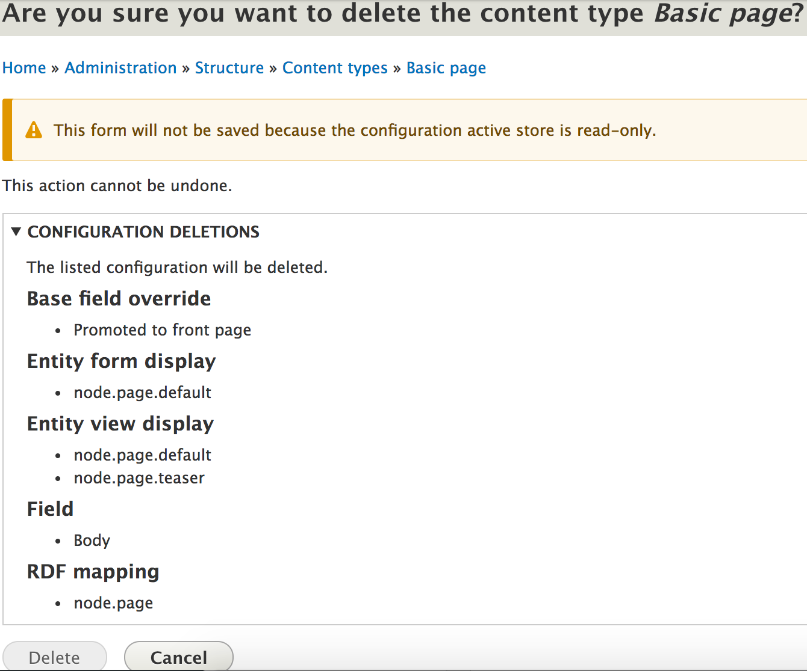

Configuration Management: Tips, Tricks & Perspective
By Zach Weishar
What can config managment do for you?
Traditionally, there are three seperate but interdependent peices of Drupal:
Code

Database
Filesystem
In order to effectivley manage change in your application, you need a way to control the state of these pieces.
Managing change in code is relativley easy through the use of a version control system (VCS), such as GIT.
Unfortunatley the same is not true for the database. This is where configuration mangment comes into play.
Configuration managment allows you to control the state of your database by exporting its configuration to code which can be managed in your VCS of choice.
-
You can easily deploy database updates between environments in the same way that you deploy code updates
-
You never loose vital changes to your database because its history is managed by your VCS.
(Not totally accurate, but pretty close)
Where we came from
In Drupal 7, configuration management is made possible by contributed modules, namely features and strong arm
-
It lives in the contrib space, which means there is no centralized API in core for module developers to expose their configuration. For example you can use either Entity API Exportables or Ctools Exportables.
-
Features was designed to bundle up small chunks of descrete site functionality, not act as full configuration store for a complex site.
-
Configuration often becomes spread between multiple features modules, which makes it hard to keep track of.
-
Features modules can have interlocking dependencies, which can make changes harder down the road.
-
Resolving merge conflicts in large features modules is tedious and error prone.
-
Features can create things, but it can't really delete them. You have to write an update hook to remove things from the database, and also remove them from the feature's code.
-
There is a centralized configuration API in Drupal 8 core.
-
All of you configuration now lives cleanly in your configuration sync directory.
-
Resolving merge conflicts is a lot easier because we have a bunch of small files instead of one large one, and the file format is yaml which is easier to read.
-
The CMS is capable of deleting things.
Things you should know about the CMS
-
The CMS is designed to move configuration between different instances of the same site, not between two separate sites.
-
What this means is that you need to set up new environments from a database dump. An example would be starting your dev site from scratch, then creating both test and live sites from dumps of the dev database. This ensures the sites UUID's will match.
-
Modules and themes can provide default configuration that is imported when they are first installed. This is found in a a module's config/install or config/optional directory.
-
Updates to the files in the config/install or config/optional directories will have no affect on modules that are already installed on your site because the site owns the configuration, not the module.
-
In order to update default config for a pre-installed module, you need to make the changes in a update hook (or uninstall / reinstall the module).
Drupal sites are often complex, and have many interlocking dependencies. Dependency calculation tries to prevent you from accidently breaking your site by warning you before you delete or remove a component that's needed somewhere else.
-
The active configuration store is the one that is currently in use. When you first install Drupal, this is the database.
-
When you export your configuration, you're exporting settings in the database to the file system, or from one store to another.
-
The active configuration store is configurable, letting you swap it out as needed for other backends like Redis or MongoDB.
In Drupal 7, all variables were global (think vset and vget), which means that they were loaded into memory on every page load. In Drupal 8, these variables are only loaded into memory when they are needed.
-
Simple Configuration: Used to store data that will only ever have one copy or version, like your site name.
-
Configuration Entities: Used to store more complex data. There can be many instances of a single configuration entity. Some examples are views, content types, and image styles.
What is considered configuration in Drupal 8?
There are four main categories of data in Drupal 8
Information of a temporary nature, generally machine-generated and not human-edited, about the current state of your site.
Examples: the time when cron was last run or whether node access permissions need rebuilding.
The data is specific to an individual environment.
You will never want to deploy it between environments.
When you reset a system, you lose all state, but configuration persists.
Information about individual users' interactions with the site, such as whether they are logged in. This is really "state" information, but it is not stored the same way so it's a separate type.
Information meant to be displayed on your site: articles, basic pages, images, files, custom blocks, etc.
Information about your site that is generally (or at least can be) human-edited, but is not content, and is meant to be relatively permanent.
Examples: the name of your site, the content types and views you have defined.
-
Content is created by site authors and configuration is created by site builders.
-
Configuration = types of things and content = things. Article content type vs article nodes.
-
Blocks are content, but block placement is configuration.
-
Menus are configuration, menu items are content.
Tips & Tricks
By default, Drupal sets up a configuration sync folder at a path like sites/default/files/config_really-long-uuid on install, but you can change the location by overriding it in settings.php
$config_directories = array(CONFIG_SYNC_DIRECTORY => '../config/sync');
-
By default, your active configuration is overwritten with the data in your file system when you import configuration. This is destructive.
-
If you only want to import new configs and not delete untracked ones:
drush config-import --partial
To skip exporting configuration from certain modules (such as devel) use:
drush config-export --skip-modules=devel
Config Split
- Move configurations that you specify out of your central configuration store (the one shared between all environments) and into split directories.
- Different configurations for different environemnts. For instance, different caching settings on dev and prod.
Configuration read only
If you want to isntall a site from existing configuration, the Configuration Installer module has you covered.
Questions?
Feedback: http://bit.ly/2sqlLwh
Slides: http://bit.ly/2rnQcov
Twitter: @ZachWeishar
Email: zweishar@isovera.com
D.O: zweishar